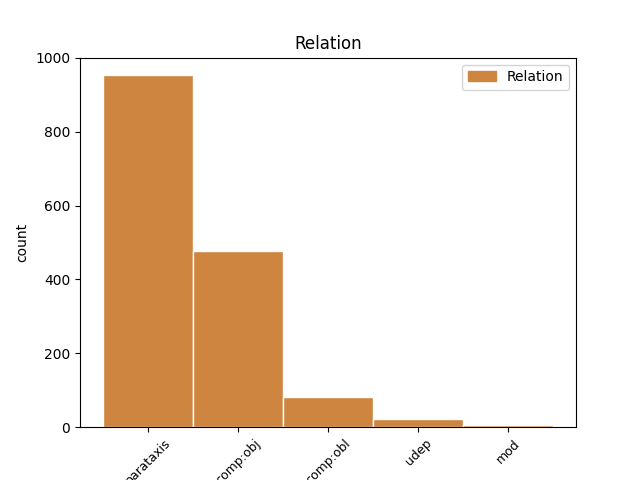
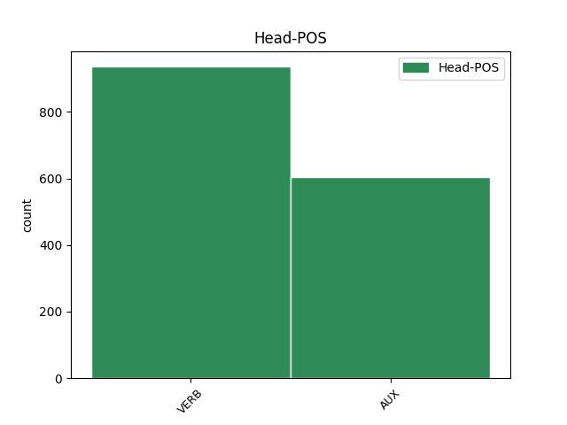
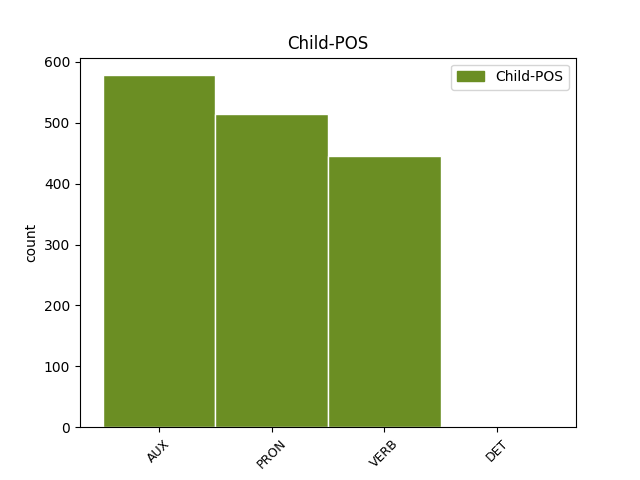

Distribution of features within this leaf



Agreement Rules sorted by frequency.
- When the dependent token is the parataxis(parataxis) of the head token, and the head token is AUX and the dependent token is AUX.
1 Njegova _ _ _ _ 0 _ _ _
2 slikarska _ _ _ _ 0 _ _ _
3 ustvarjalnost _ _ _ _ 0 _ _ _
4 je biti AUX Va-r3s-n Mood=Ind|Number=Sing|Person=3|Polarity=Pos|Tense=Pres|VerbForm=Fin 0 _ _ _
5 v _ _ _ _ 0 _ _ _
6 primerjavi _ _ _ _ 0 _ _ _
7 s _ _ _ _ 0 _ _ _
8 kakim _ _ _ _ 0 _ _ _
9 Rafaelom _ _ _ _ 0 _ _ _
10 izrazito _ _ _ _ 0 _ _ _
11 borna _ _ _ _ 0 _ _ _
12 : _ _ _ _ 0 _ _ _
13 zapustil _ _ _ _ 0 _ _ _
14 je biti AUX Va-r3s-n Mood=Ind|Number=Sing|Person=3|Polarity=Pos|Tense=Pres|VerbForm=Fin 4 parataxis _ Dep=13|Rel=PPart
15 samo _ _ _ _ 0 _ _ _
16 kakih _ _ _ _ 0 _ _ _
17 petnajst _ _ _ _ 0 _ _ _
18 slik _ _ _ _ 0 _ _ _
19 od _ _ _ _ 0 _ _ _
20 tistih _ _ _ _ 0 _ _ _
21 tridesetih _ _ _ _ 0 _ _ _
22 , _ _ _ _ 0 _ _ _
23 ki _ _ _ _ 0 _ _ _
24 jih _ _ _ _ 0 _ _ _
25 je _ _ _ _ 0 _ _ _
26 bil _ _ _ _ 0 _ _ _
27 v _ _ _ _ 0 _ _ _
28 tem _ _ _ _ 0 _ _ _
29 obdobju _ _ _ _ 0 _ _ _
30 ustvaril _ _ _ _ 0 _ _ _
31 ali _ _ _ _ 0 _ _ _
32 zastavil _ _ _ _ 0 _ _ _
33 . _ _ _ _ 0 _ _ _
1 Svetniki _ _ _ _ 0 _ _ _
2 namreč _ _ _ _ 0 _ _ _
3 v _ _ _ _ 0 _ _ _
4 samem _ _ _ _ 0 _ _ _
5 bistvu _ _ _ _ 0 _ _ _
6 zastopajo _ _ _ _ 0 _ _ _
7 le _ _ _ _ 0 _ _ _
8 interese _ _ _ _ 0 _ _ _
9 poklicnih _ _ _ _ 0 _ _ _
10 sfer _ _ _ _ 0 _ _ _
11 , _ _ _ _ 0 _ _ _
12 ki _ _ _ _ 0 _ _ _
13 jim on PRON Pp3mpd--y Case=Dat|Gender=Masc|Number=Plur|Person=3|PronType=Prs|Variant=Short 14 comp:obj _ Dep=14|Rel=Obj
14 pripadajo pripadati VERB Vmpr3p Aspect=Imp|Mood=Ind|Number=Plur|Person=3|Tense=Pres|VerbForm=Fin 0 _ _ _
15 . _ _ _ _ 0 _ _ _
1 Prek _ _ _ _ 0 _ _ _
2 njih _ _ _ _ 0 _ _ _
3 lahko _ _ _ _ 0 _ _ _
4 nastavljamo nastavljati VERB Vmpr1p Aspect=Imp|Mood=Ind|Number=Plur|Person=1|Tense=Pres|VerbForm=Fin 0 _ _ _
5 osveževalne _ _ _ _ 0 _ _ _
6 frekvence _ _ _ _ 0 _ _ _
7 in _ _ _ _ 0 _ _ _
8 / _ _ _ _ 0 _ _ _
9 ali _ _ _ _ 0 _ _ _
10 tip _ _ _ _ 0 _ _ _
11 monitorja _ _ _ _ 0 _ _ _
12 , _ _ _ _ 0 _ _ _
13 izberemo izbrati VERB Vmer1p Aspect=Perf|Mood=Ind|Number=Plur|Person=1|Tense=Pres|VerbForm=Fin 4 parataxis _ Dep=0|Rel=Root
14 pa _ _ _ _ 0 _ _ _
15 lahko _ _ _ _ 0 _ _ _
16 tudi _ _ _ _ 0 _ _ _
17 strojno _ _ _ _ 0 _ _ _
18 povečavo _ _ _ _ 0 _ _ _
19 zaslona _ _ _ _ 0 _ _ _
20 . _ _ _ _ 0 _ _ _
1 KOČEVJE _ _ _ _ 0 _ _ _
2 Iz _ _ _ _ 0 _ _ _
3 Kočevja _ _ _ _ 0 _ _ _
4 proti _ _ _ _ 0 _ _ _
5 Ljubljani _ _ _ _ 0 _ _ _
6 v _ _ _ _ 0 _ _ _
7 prihodnje _ _ _ _ 0 _ _ _
8 ne _ _ _ _ 0 _ _ _
9 bodo biti AUX Va-f3p-n Mood=Ind|Number=Plur|Person=3|Polarity=Pos|Tense=Fut|VerbForm=Fin 0 _ _ _
10 vozili _ _ _ _ 0 _ _ _
11 zgolj _ _ _ _ 0 _ _ _
12 les _ _ _ _ 0 _ _ _
13 , _ _ _ _ 0 _ _ _
14 neprecenljivo _ _ _ _ 0 _ _ _
15 bogastvo _ _ _ _ 0 _ _ _
16 poraščene _ _ _ _ 0 _ _ _
17 pokrajine _ _ _ _ 0 _ _ _
18 tik _ _ _ _ 0 _ _ _
19 ob _ _ _ _ 0 _ _ _
20 hrvaški _ _ _ _ 0 _ _ _
21 meji _ _ _ _ 0 _ _ _
22 , _ _ _ _ 0 _ _ _
23 gneča _ _ _ _ 0 _ _ _
24 na _ _ _ _ 0 _ _ _
25 cesti _ _ _ _ 0 _ _ _
26 bo biti VERB Va-f3s-n Mood=Ind|Number=Sing|Person=3|Polarity=Pos|Tense=Fut|VerbForm=Fin 9 parataxis _ Dep=0|Rel=Root
27 tudi _ _ _ _ 0 _ _ _
28 zaradi _ _ _ _ 0 _ _ _
29 povečane _ _ _ _ 0 _ _ _
30 zmogljivosti _ _ _ _ 0 _ _ _
31 pri _ _ _ _ 0 _ _ _
32 proizvodnji _ _ _ _ 0 _ _ _
33 najbolj _ _ _ _ 0 _ _ _
34 znanih _ _ _ _ 0 _ _ _
35 slovenskih _ _ _ _ 0 _ _ _
36 sirov _ _ _ _ 0 _ _ _
37 . _ _ _ _ 0 _ _ _
1 Večjo _ _ _ _ 0 _ _ _
2 količino _ _ _ _ 0 _ _ _
3 pomnilnika _ _ _ _ 0 _ _ _
4 ima imeti VERB Vmpr3s-n Aspect=Imp|Mood=Ind|Number=Sing|Person=3|Polarity=Pos|Tense=Pres|VerbForm=Fin 0 _ _ _
5 grafična _ _ _ _ 0 _ _ _
6 kartica _ _ _ _ 0 _ _ _
7 , _ _ _ _ 0 _ _ _
8 večje _ _ _ _ 0 _ _ _
9 resolucije _ _ _ _ 0 _ _ _
10 barv _ _ _ _ 0 _ _ _
11 in _ _ _ _ 0 _ _ _
12 dimenzij _ _ _ _ 0 _ _ _
13 zaslona _ _ _ _ 0 _ _ _
14 je biti AUX Va-r3s-n Mood=Ind|Number=Sing|Person=3|Polarity=Pos|Tense=Pres|VerbForm=Fin 4 parataxis _ Dep=0|Rel=Root
15 sposobna _ _ _ _ 0 _ _ _
16 . _ _ _ _ 0 _ _ _
1 Najprej _ _ _ _ 0 _ _ _
2 ga on PRON Pp3msa--y Case=Acc|Gender=Masc|Number=Sing|Person=3|PronType=Prs|Variant=Short 3 comp:obl _ Dep=3|Rel=Obj
3 razumejo razumeti VERB Vmbr3p Mood=Ind|Number=Plur|Person=3|Tense=Pres|VerbForm=Fin 0 _ _ _
4 nekateri _ _ _ _ 0 _ _ _
5 , _ _ _ _ 0 _ _ _
6 ki _ _ _ _ 0 _ _ _
7 so _ _ _ _ 0 _ _ _
8 kot _ _ _ _ 0 _ _ _
9 on _ _ _ _ 0 _ _ _
10 rojeni _ _ _ _ 0 _ _ _
11 v _ _ _ _ 0 _ _ _
12 znamenju _ _ _ _ 0 _ _ _
13 strelca _ _ _ _ 0 _ _ _
14 . _ _ _ _ 0 _ _ _
1 Gospoda _ _ _ _ 0 _ _ _
2 Klinarja _ _ _ _ 0 _ _ _
3 , _ _ _ _ 0 _ _ _
4 člana _ _ _ _ 0 _ _ _
5 skupine _ _ _ _ 0 _ _ _
6 Agropop _ _ _ _ 0 _ _ _
7 , _ _ _ _ 0 _ _ _
8 novinarka _ _ _ _ 0 _ _ _
9 sprašuje spraševati VERB Vmpr3s Aspect=Imp|Mood=Ind|Number=Sing|Person=3|Tense=Pres|VerbForm=Fin 0 _ _ _
10 , _ _ _ _ 0 _ _ _
11 od _ _ _ _ 0 _ _ _
12 kdaj _ _ _ _ 0 _ _ _
13 je biti VERB Va-r3s-n Mood=Ind|Number=Sing|Person=3|Polarity=Pos|Tense=Pres|VerbForm=Fin 9 comp:obj _ Dep=9|Rel=Obj
14 kulturni _ _ _ _ 0 _ _ _
15 delavec _ _ _ _ 0 _ _ _
16 in _ _ _ _ 0 _ _ _
17 zakaj _ _ _ _ 0 _ _ _
18 . _ _ _ _ 0 _ _ _
1 Zaradi _ _ _ _ 0 _ _ _
2 uporabe _ _ _ _ 0 _ _ _
3 ikon _ _ _ _ 0 _ _ _
4 , _ _ _ _ 0 _ _ _
5 ki _ _ _ _ 0 _ _ _
6 povejo povedati VERB Vmer3p Aspect=Perf|Mood=Ind|Number=Plur|Person=3|Tense=Pres|VerbForm=Fin 0 _ _ _
7 , _ _ _ _ 0 _ _ _
8 katere _ _ _ _ 0 _ _ _
9 vrste _ _ _ _ 0 _ _ _
10 je biti AUX Va-r3s-n Mood=Ind|Number=Sing|Person=3|Polarity=Pos|Tense=Pres|VerbForm=Fin 6 comp:obj _ Dep=6|Rel=Obj
11 datoteka _ _ _ _ 0 _ _ _
12 , _ _ _ _ 0 _ _ _
13 sedaj _ _ _ _ 0 _ _ _
14 poleg _ _ _ _ 0 _ _ _
15 ikone _ _ _ _ 0 _ _ _
16 ni _ _ _ _ 0 _ _ _
17 potrebno _ _ _ _ 0 _ _ _
18 vključiti _ _ _ _ 0 _ _ _
19 tekstovnega _ _ _ _ 0 _ _ _
20 opisa _ _ _ _ 0 _ _ _
21 formata _ _ _ _ 0 _ _ _
22 datoteke _ _ _ _ 0 _ _ _
23 . _ _ _ _ 0 _ _ _
1 Kljub _ _ _ _ 0 _ _ _
2 vsemu _ _ _ _ 0 _ _ _
3 sem _ _ _ _ 0 _ _ _
4 še _ _ _ _ 0 _ _ _
5 naprej _ _ _ _ 0 _ _ _
6 veslal _ _ _ _ 0 _ _ _
7 in _ _ _ _ 0 _ _ _
8 še _ _ _ _ 0 _ _ _
9 zmerom _ _ _ _ 0 _ _ _
10 ni _ _ _ _ 0 _ _ _
11 bilo _ _ _ _ 0 _ _ _
12 nikjer _ _ _ _ 0 _ _ _
13 videti _ _ _ _ 0 _ _ _
14 nobene _ _ _ _ 0 _ _ _
15 zapornice _ _ _ _ 0 _ _ _
16 , _ _ _ _ 0 _ _ _
17 reka _ _ _ _ 0 _ _ _
18 pa _ _ _ _ 0 _ _ _
19 je _ _ _ _ 0 _ _ _
20 postajala _ _ _ _ 0 _ _ _
21 bolj _ _ _ _ 0 _ _ _
22 in _ _ _ _ 0 _ _ _
23 bolj _ _ _ _ 0 _ _ _
24 mračna _ _ _ _ 0 _ _ _
25 in _ _ _ _ 0 _ _ _
26 skrivnostna _ _ _ _ 0 _ _ _
27 , _ _ _ _ 0 _ _ _
28 ko _ _ _ _ 0 _ _ _
29 so biti AUX Va-r3p-n Mood=Ind|Number=Plur|Person=3|Polarity=Pos|Tense=Pres|VerbForm=Fin 0 _ _ _
30 se _ _ _ _ 0 _ _ _
31 zgrinjale _ _ _ _ 0 _ _ _
32 nadnjo nadme PRON Pp3fsa--b Case=Acc|Gender=Fem|Number=Sing|Person=3|PronType=Prs|Variant=Bound 29 udep _ Dep=31|Rel=AdvO
33 nočne _ _ _ _ 0 _ _ _
34 sence _ _ _ _ 0 _ _ _
35 in _ _ _ _ 0 _ _ _
36 je _ _ _ _ 0 _ _ _
37 postajalo _ _ _ _ 0 _ _ _
38 vse _ _ _ _ 0 _ _ _
39 vedno _ _ _ _ 0 _ _ _
40 bolj _ _ _ _ 0 _ _ _
41 neznano _ _ _ _ 0 _ _ _
42 in _ _ _ _ 0 _ _ _
43 grozljivo _ _ _ _ 0 _ _ _
44 . _ _ _ _ 0 _ _ _
1 En _ _ _ _ 0 _ _ _
2 sam _ _ _ _ 0 _ _ _
3 ponosen _ _ _ _ 0 _ _ _
4 režanje _ _ _ _ 0 _ _ _
5 jih on PRON Pp3mpg--y Case=Gen|Gender=Masc|Number=Plur|Person=3|PronType=Prs|Variant=Short 6 udep _ Dep=6|Rel=AdvO
6 je biti VERB Va-r3s-n Mood=Ind|Number=Sing|Person=3|Polarity=Pos|Tense=Pres|VerbForm=Fin 0 _ _ _
7 . _ _ _ _ 0 _ _ _
1 Prepričan _ _ _ _ 0 _ _ _
2 sem _ _ _ _ 0 _ _ _
3 , _ _ _ _ 0 _ _ _
4 da _ _ _ _ 0 _ _ _
5 moram _ _ _ _ 0 _ _ _
6 rešiti _ _ _ _ 0 _ _ _
7 svoja _ _ _ _ 0 _ _ _
8 otroka _ _ _ _ 0 _ _ _
9 ; _ _ _ _ 0 _ _ _
10 v _ _ _ _ 0 _ _ _
11 bistvu _ _ _ _ 0 _ _ _
12 pa _ _ _ _ 0 _ _ _
13 sta biti AUX Va-r3d-n Mood=Ind|Number=Dual|Person=3|Polarity=Pos|Tense=Pres|VerbForm=Fin 0 _ _ _
14 me _ _ _ _ 0 _ _ _
15 reševala _ _ _ _ 0 _ _ _
16 onadva _ _ _ _ 0 _ _ _
17 , _ _ _ _ 0 _ _ _
18 tako _ _ _ _ 0 _ _ _
19 da _ _ _ _ 0 _ _ _
20 sta biti AUX Va-r3d-n Mood=Ind|Number=Dual|Person=3|Polarity=Pos|Tense=Pres|VerbForm=Fin 13 mod _ Dep=22|Rel=PPart
21 mi _ _ _ _ 0 _ _ _
22 preprečevala _ _ _ _ 0 _ _ _
23 , _ _ _ _ 0 _ _ _
24 da _ _ _ _ 0 _ _ _
25 bi _ _ _ _ 0 _ _ _
26 obupal _ _ _ _ 0 _ _ _
27 . _ _ _ _ 0 _ _ _
Disagree Examples:
1 " _ _ _ _ 0 _ _ _
2 Tistega _ _ _ _ 0 _ _ _
3 večera _ _ _ _ 0 _ _ _
4 sem biti AUX Va-r1s-n Mood=Ind|Number=Sing|Person=1|Polarity=Pos|Tense=Pres|VerbForm=Fin 0 _ _ _
5 preveč _ _ _ _ 0 _ _ _
6 popil _ _ _ _ 0 _ _ _
7 , _ _ _ _ 0 _ _ _
8 zgodilo _ _ _ _ 0 _ _ _
9 se _ _ _ _ 0 _ _ _
10 je biti AUX Va-r3s-n Mood=Ind|Number=Sing|Person=3|Polarity=Pos|Tense=Pres|VerbForm=Fin 4 parataxis _ Dep=8|Rel=PPart
11 mesec _ _ _ _ 0 _ _ _
12 dni _ _ _ _ 0 _ _ _
13 po _ _ _ _ 0 _ _ _
14 tem _ _ _ _ 0 _ _ _
15 , _ _ _ _ 0 _ _ _
16 ko _ _ _ _ 0 _ _ _
17 sem _ _ _ _ 0 _ _ _
18 izvedel _ _ _ _ 0 _ _ _
19 , _ _ _ _ 0 _ _ _
20 da _ _ _ _ 0 _ _ _
21 me _ _ _ _ 0 _ _ _
22 žena _ _ _ _ 0 _ _ _
23 vara _ _ _ _ 0 _ _ _
24 . _ _ _ _ 0 _ _ _
1 " _ _ _ _ 0 _ _ _
2 Tistega _ _ _ _ 0 _ _ _
3 večera _ _ _ _ 0 _ _ _
4 sem _ _ _ _ 0 _ _ _
5 preveč _ _ _ _ 0 _ _ _
6 popil _ _ _ _ 0 _ _ _
7 , _ _ _ _ 0 _ _ _
8 zgodilo _ _ _ _ 0 _ _ _
9 se _ _ _ _ 0 _ _ _
10 je _ _ _ _ 0 _ _ _
11 mesec _ _ _ _ 0 _ _ _
12 dni _ _ _ _ 0 _ _ _
13 po _ _ _ _ 0 _ _ _
14 tem _ _ _ _ 0 _ _ _
15 , _ _ _ _ 0 _ _ _
16 ko _ _ _ _ 0 _ _ _
17 sem _ _ _ _ 0 _ _ _
18 izvedel _ _ _ _ 0 _ _ _
19 , _ _ _ _ 0 _ _ _
20 da _ _ _ _ 0 _ _ _
21 me jaz PRON Pp1-sa--y Case=Acc|Number=Sing|Person=1|PronType=Prs|Variant=Short 23 comp:obj _ Dep=23|Rel=Obj
22 žena _ _ _ _ 0 _ _ _
23 vara varati VERB Vmpr3s Aspect=Imp|Mood=Ind|Number=Sing|Person=3|Tense=Pres|VerbForm=Fin 0 _ _ _
24 . _ _ _ _ 0 _ _ _
1 Dekle _ _ _ _ 0 _ _ _
2 je biti AUX Va-r3s-n Mood=Ind|Number=Sing|Person=3|Polarity=Pos|Tense=Pres|VerbForm=Fin 0 _ _ _
3 ob _ _ _ _ 0 _ _ _
4 vzvratni _ _ _ _ 0 _ _ _
5 vožnji _ _ _ _ 0 _ _ _
6 začelo _ _ _ _ 0 _ _ _
7 vpiti _ _ _ _ 0 _ _ _
8 , _ _ _ _ 0 _ _ _
9 da _ _ _ _ 0 _ _ _
10 bi _ _ _ _ 0 _ _ _
11 jo _ _ _ _ 0 _ _ _
12 utišal _ _ _ _ 0 _ _ _
13 , _ _ _ _ 0 _ _ _
14 sem biti AUX Va-r1s-n Mood=Ind|Number=Sing|Person=1|Polarity=Pos|Tense=Pres|VerbForm=Fin 2 parataxis _ Dep=15|Rel=PPart
15 prijel _ _ _ _ 0 _ _ _
16 nož _ _ _ _ 0 _ _ _
17 . _ _ _ _ 0 _ _ _
1 Kaj _ _ _ _ 0 _ _ _
2 se _ _ _ _ 0 _ _ _
3 je _ _ _ _ 0 _ _ _
4 zgodilo _ _ _ _ 0 _ _ _
5 , _ _ _ _ 0 _ _ _
6 sem biti AUX Va-r1s-n Mood=Ind|Number=Sing|Person=1|Polarity=Pos|Tense=Pres|VerbForm=Fin 0 _ _ _
7 izvedel _ _ _ _ 0 _ _ _
8 šele _ _ _ _ 0 _ _ _
9 naslednjega _ _ _ _ 0 _ _ _
10 dne _ _ _ _ 0 _ _ _
11 iz _ _ _ _ 0 _ _ _
12 časopisja _ _ _ _ 0 _ _ _
13 , _ _ _ _ 0 _ _ _
14 " _ _ _ _ 0 _ _ _
15 je biti AUX Va-r3s-n Mood=Ind|Number=Sing|Person=3|Polarity=Pos|Tense=Pres|VerbForm=Fin 6 parataxis _ Dep=22|Rel=PPart
16 v _ _ _ _ 0 _ _ _
17 intervju _ _ _ _ 0 _ _ _
18 za _ _ _ _ 0 _ _ _
19 Stampo _ _ _ _ 0 _ _ _
20 iz _ _ _ _ 0 _ _ _
21 Torina _ _ _ _ 0 _ _ _
22 izjavil _ _ _ _ 0 _ _ _
23 morilec _ _ _ _ 0 _ _ _
24 . _ _ _ _ 0 _ _ _
1 Segrejte _ _ _ _ 0 _ _ _
2 svojo _ _ _ _ 0 _ _ _
3 peč _ _ _ _ 0 _ _ _
4 , _ _ _ _ 0 _ _ _
5 da _ _ _ _ 0 _ _ _
6 vam ti PRON Pp2-pd Case=Dat|Number=Plur|Person=2|PronType=Prs 7 comp:obj _ Dep=7|Rel=Obj
7 bo biti VERB Va-f3s-n Mood=Ind|Number=Sing|Person=3|Polarity=Pos|Tense=Fut|VerbForm=Fin 0 _ _ _
8 toplo _ _ _ _ 0 _ _ _
9 in _ _ _ _ 0 _ _ _
10 da _ _ _ _ 0 _ _ _
11 boste _ _ _ _ 0 _ _ _
12 v _ _ _ _ 0 _ _ _
13 sebi _ _ _ _ 0 _ _ _
14 znova _ _ _ _ 0 _ _ _
15 začutile _ _ _ _ 0 _ _ _
16 življenje _ _ _ _ 0 _ _ _
17 ! _ _ _ _ 0 _ _ _